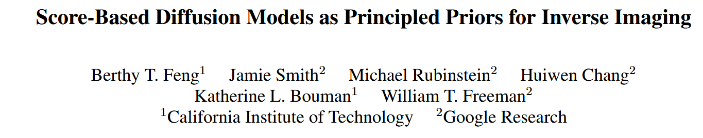

 Published in International Conference on Learning Representations (ICLR), 2023
1. Background#
Diffusion models (DMs) have recently shown great success in high-quality image generation, thanks to their ability to model complex data distributions through a sequence of denoising steps. One representative framework is Denoising Diffusion Probabilistic Models (DDPMs) [1], which learn to reverse a fixed forward noising process.
However, these models are typically trained unconditionally or conditionally using label information or prompts (e.g., text). When applied to inverse problems like deblurring, inpainting, or super-resolution, these models face the challenge that:
The model is not aware of how the measurements (e.g., blurry or masked images) were generated.
There is no direct way to sample from the posterior distribution $p(x|y)$, where $y$ is the observed measurement.
Existing methods either retrain models with known measurement models (which is expensive and specific), or apply test-time optimization (which is slow and sometimes unstable). #
2. The Core Idea#
This paper introduces Diffusion Posterior Sampling (DPS), a general framework that combines the strength of diffusion models with classical Bayesian inference to solve arbitrary noisy inverse problems, without requiring retraining.
Goal#
We want to sample from the posterior distribution $p(x|y)$, where:
$x$ is the clean data we want to recover,
$y$ is the observed measurement (e.g., blurred, compressed, masked image),
and $y = A(x) + n$, where $A$ is a known forward operator and $n$ is noise.
Posterior sampling formulation#
We apply Bayes’ theorem:
p(x|y) \propto p(y|x) \cdot p(x)
Here:
$p(x)$ is the learned prior from the diffusion model.
$p(y|x)$ comes from the measurement model $A$.
In the standard diffusion setup, the reverse process is modeled as:
p_\theta(x_{t-1}|x_t) = \mathcal{N}(x_{t-1}; \mu_\theta(x_t, t), \Sigma_\theta(x_t, t))
But to condition this process on $y$, DPS adds a correction based on the measurement log-likelihood $\nabla_{x_t} \log p(y|x_t)$.
DPS Sampling Rule#
At each step $t$, given a sample $x_t$, we update:
x_t \leftarrow x_t + \eta_t \nabla_{x_t} \log p(y|x_t)
where $\eta_t$ is a step-size schedule.
This gradient is computed by defining a likelihood (based on the known forward model $A$):
\log p(y|x) = -\| A(x) - y \|^2 / (2 \sigma^2)
So the final update is a guided sampling:
x_t \leftarrow x_t + \eta_t \nabla_{x_t} \left[ -\| A(x_t) - y \|^2 \right]
This allows us to plug in arbitrary forward models $A$, such as:
masking (for inpainting),
blurring (for deblurring),
downsampling (for super-resolution), without retraining the diffusion model.
3. Contribution#
Proposes a general and elegant posterior sampling framework based on pretrained diffusion models.
The method is plug-and-play: it supports arbitrary forward operators without retraining.
Provides theoretical justification and demonstrates connections to classical Bayesian inference.
Achieves state-of-the-art results on a wide range of inverse problems (inpainting, deblurring, etc.).
The code is simple and easily adaptable to different tasks and forward models.
References#
[1] Ho, J., Jain, A., & Abbeel, P. (2020). Denoising diffusion probabilistic models. NeurIPS
[2] Song, Y., & Ermon, S. (2020). Score-based generative modeling through stochastic differential equations. ICLR
[3] Song, J., Meng, C., & Ermon, S. (2023). Diffusion Posterior Sampling for General Noisy Inverse Problems. ICLR
üîç Code Explanation ‚Äî DPS vs. Standard Diffusion Models#
This function implements sampling using a pretrained diffusion model, but with a key twist: it performs posterior-guided inference by incorporating measurement consistency.
In contrast to standard diffusion models, which generate samples unconditionally (or conditionally on high-level information like text), DPS (Diffusion Posterior Sampling) adds a gradient-based correction at each denoising step to ensure that the output is consistent with an observed measurement $y = A(x) + n$.
This is particularly useful for solving inverse problems, where we don’t just want to generate “realistic” images — we want to generate images that match what we observed under a known forward model $A$.
üîß Function Breakdown: p_sample_loop()#
def p_sample_loop(self, model, x_start, measurement, measurement_cond_fn, record, save_root):
This function starts from pure noise x_start and iteratively denoises it to obtain a final reconstruction img, guided by both the diffusion model and the observed measurement y.
üîÅ Main Loop: Reverse-Time Sampling#
pbar = tqdm(list(range(self.num_timesteps))[::-1])
for idx in pbar:
time = torch.tensor([idx] * img.shape[0], device=device)
img = img.requires_grad_()
Loop through all timesteps from $T$ down to 1.
Like in standard DDPM, the input at each step
x_trequires gradients to allow gradient-based correction.
üéØ 1. Standard Diffusion Step#
out = self.p_sample(x=img, t=time, model=model)
This step computes the standard reverse diffusion prediction, producing:
out['sample']: the denoised sample $x_{t-1}$out['pred_xstart']: estimated clean image $x_0$
ü߆ This is identical to what a regular diffusion model does.
üì° 2. Add Measurement-Based Guidance (Key Difference!)#
noisy_measurement = self.q_sample(measurement, t=time)
img, distance = measurement_cond_fn(
x_t=out['sample'],
measurement=measurement,
noisy_measurement=noisy_measurement,
x_prev=img,
x_0_hat=out['pred_xstart']
)
This is where DPS differs from standard diffusion:
measurement_cond_fnuses the forward model $A$ and the current output to compute a gradient correction that pullsimgcloser to satisfying $A(x) ≈ y$.The update may look like:
x_t ← x_t + η_t ∇ₓ log p(y | x)
The
distancetracks how far the current estimate is from matching the measurement.
üߺ 3. Detach and Proceed#
img = img.detach_()
Reset gradients before the next step. This makes sure each sampling step is independent.
üìä 4. Optional Visualization#
if record and idx % 100 == 0:
# Save and show intermediate reconstruction
Every 100 steps, the current result is visualized and saved.
✅ Return Final Result#
return img
This is the final output after all denoising and measurement-based corrections.
ü߆ Summary of Differences from Standard Diffusion Models#
Aspect |
Standard Diffusion |
DPS (This Function) |
|---|---|---|
Guidance |
No / weak (classifier-free) |
Strong physical consistency (via ∇ log p(y |
Output goal |
Any realistic image |
Image that matches observation y |
Usage |
Generation (text2img, etc.) |
Solving inverse problems |
Gradient correction |
None / optional |
Always applied at every step |
def load_yaml(file_path: str) -> dict:
with open(file_path) as f:
config = yaml.load(f, Loader=yaml.FullLoader)
return config
def main():
sys.argv = ['']
parser = argparse.ArgumentParser()
parser.add_argument('--model_config', type=str, default='/home/xqgao/2025/MIT/code/Inv/diffusion-posterior-sampling-main/configs/model_config.yaml', help='Path to the model configuration file')
parser.add_argument('--diffusion_config', type=str, default='/home/xqgao/2025/MIT/code/Inv/diffusion-posterior-sampling-main/configs/diffusion_config.yaml', help='Path to the diffusion configuration file')
parser.add_argument('--task_config', type=str, default='/home/xqgao/2025/MIT/code/Inv/diffusion-posterior-sampling-main/configs/super_resolution_config.yaml', help='Path to the task configuration file (default: {TASK-CONFIG})')
parser.add_argument('--gpu', type=int, default=0, help='GPU index to use (default: 0)')
parser.add_argument('--save_dir', type=str, default='/home/xqgao/2025/MIT/code/Inv/diffusion-posterior-sampling-main/results', help='Directory to save results (default: ./results)')
args = parser.parse_args()
# logger
logger = get_logger()
# Device setting
device_str = f"cuda:{args.gpu}" if torch.cuda.is_available() else 'cpu'
logger.info(f"Device set to {device_str}.")
device = torch.device(device_str)
# Load configurations
model_config = load_yaml(args.model_config)
diffusion_config = load_yaml(args.diffusion_config)
task_config = load_yaml(args.task_config)
#assert model_config['learn_sigma'] == diffusion_config['learn_sigma'], \
#"learn_sigma must be the same for model and diffusion configuartion."
# Load model
model = create_model(**model_config)
model = model.to(device)
model.eval()
# Prepare Operator and noise
measure_config = task_config['measurement']
operator = get_operator(device=device, **measure_config['operator'])
noiser = get_noise(**measure_config['noise'])
logger.info(f"Operation: {measure_config['operator']['name']} / Noise: {measure_config['noise']['name']}")
# Prepare conditioning method
cond_config = task_config['conditioning']
cond_method = get_conditioning_method(cond_config['method'], operator, noiser, **cond_config['params'])
measurement_cond_fn = cond_method.conditioning
logger.info(f"Conditioning method : {task_config['conditioning']['method']}")
# Load diffusion sampler
sampler = create_sampler(**diffusion_config)
sample_fn = partial(sampler.p_sample_loop, model=model, measurement_cond_fn=measurement_cond_fn)
# Working directory
out_path = os.path.join(args.save_dir, measure_config['operator']['name'])
os.makedirs(out_path, exist_ok=True)
for img_dir in ['input', 'recon', 'progress', 'label']:
os.makedirs(os.path.join(out_path, img_dir), exist_ok=True)
# Prepare dataloader
data_config = task_config['data']
transform = transforms.Compose([transforms.ToTensor(),
transforms.Normalize((0.5, 0.5, 0.5), (0.5, 0.5, 0.5))])
dataset = get_dataset(**data_config, transforms=transform)
loader = get_dataloader(dataset, batch_size=1, num_workers=0, train=False)
# Exception) In case of inpainting, we need to generate a mask
if measure_config['operator']['name'] == 'inpainting':
mask_gen = mask_generator(
**measure_config['mask_opt']
)
# Do Inference
for i, ref_img in enumerate(loader):
logger.info(f"Inference for image {i}")
fname = str(i).zfill(5) + '.png'
ref_img = ref_img.to(device)
# Exception) In case of inpainging,
if measure_config['operator'] ['name'] == 'inpainting':
mask = mask_gen(ref_img)
mask = mask[:, 0, :, :].unsqueeze(dim=0)
measurement_cond_fn = partial(cond_method.conditioning, mask=mask)
sample_fn = partial(sample_fn, measurement_cond_fn=measurement_cond_fn)
# Forward measurement model (Ax + n)
y = operator.forward(ref_img, mask=mask)
y_n = noiser(y)
else:
# Forward measurement model (Ax + n)
y = operator.forward(ref_img)
y_n = noiser(y)
# Sampling
x_start = torch.randn(ref_img.shape, device=device).requires_grad_()
sample = sample_fn(x_start=x_start, measurement=y_n, record=True, save_root=out_path)
plt.imsave(os.path.join(out_path, 'input', fname), clear_color(y_n))
plt.imsave(os.path.join(out_path, 'label', fname), clear_color(ref_img))
plt.imsave(os.path.join(out_path, 'recon', fname), clear_color(sample))
if __name__ == '__main__':
main()